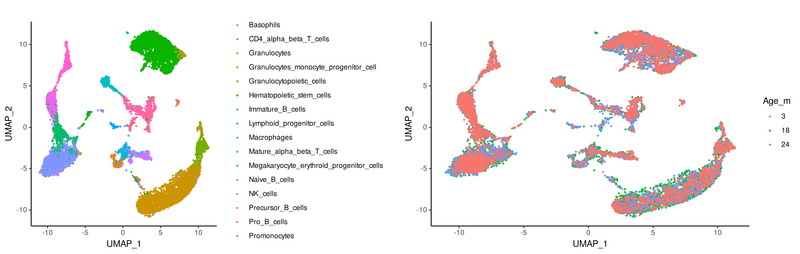
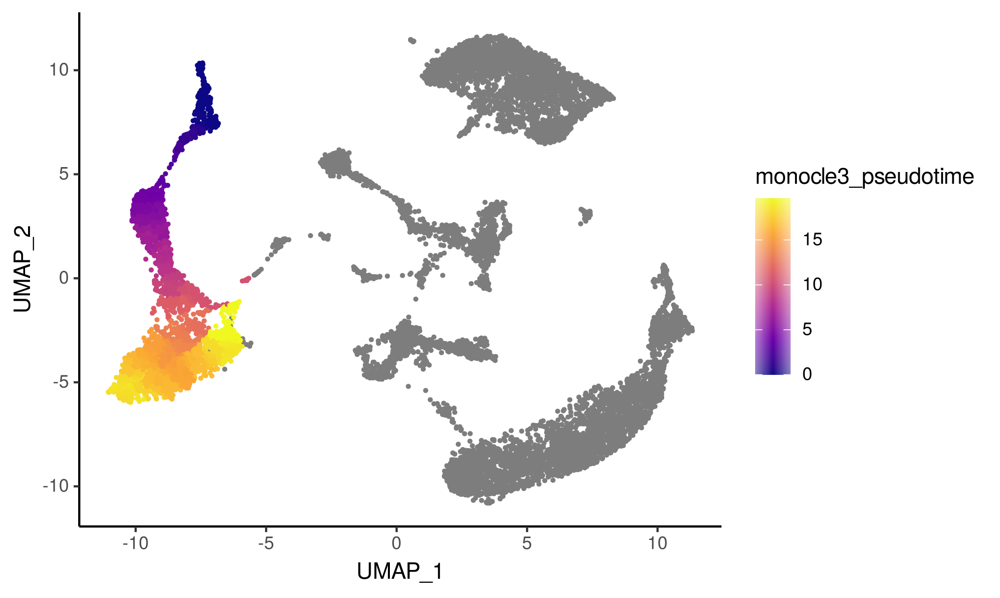
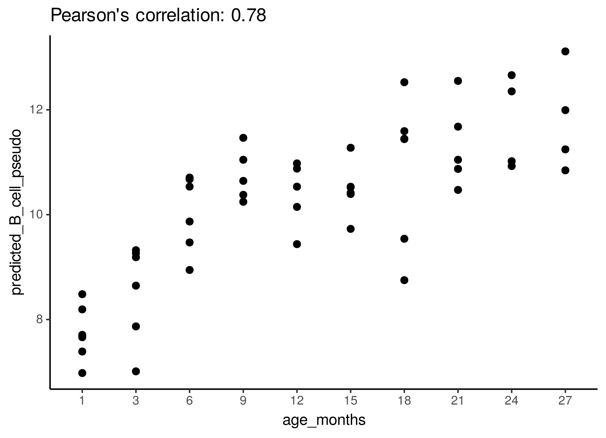

B-cells transcriptomic data
a2_B_cell_RNA.RmdIn this tutorial, we will use ConDecon to study changes in single-cell abundance associated with continuous cellular processes. We will consider single-cell and bulk RNA-seq data from the bone marrow of mice ages 1-27months (Tabula Muris Consortium) and used these data to study changes in cell abundance associated with development and aging. We are particularly interested in well-characterized changes in B-cell abundance that occur during postnatal development. For convenience, the processed data associated with this tutorial is available on Zenodo.
As a reference dataset, we will use single-cell RNA-seq data from across the life span of a mouse.
scRNA_count <- readRDS("../scRNA_counts.Rds")
scRNA_Harmony <- readRDS("../scRNA_Harmony.Rds")
scRNA_var_genes <- readRDS("../scRNA_var_genes.Rds")
scRNA_meta_data <- readRDS("../scRNA_meta_data.Rds")
# Visualize the cell types of the single-cell RNA-seq data
g1 <- ggplot(scRNA_meta_data, aes(x = UMAP_1, y = UMAP_2, color = cellType)) +
geom_point(size = 0.5) +
theme_classic()
# Visualize the mouse age of the single-cell RNA-seq data
g2 <- ggplot(scRNA_meta_data, aes(x = UMAP_1, y = UMAP_2,
color = factor(as.character(Age_months), levels = c(3,18,24)))) +
geom_point(size = 0.5) +
theme_classic()
grid.arrange(g1, g2, ncol=2)
We are interested in using ConDecon to deconvolve 53 bulk RNA-seq samples from 10 time points.
BulkRNA_data <- readRDS("../BulkRNA_data.Rds")
BulkRNA_meta_data <- readRDS("../BulkRNA_meta_data.Rds")We can now use ‘RunConDecon’ to deconvolve bulk RNA-seq data using single-cell RNA-seq data as reference.
startTime <- Sys.time()
ConDecon_obj = RunConDecon(counts = scRNA_count,
latent = scRNA_Harmony[,1:30],
bulk = BulkRNA_data,
variable.features = scRNA_var_genes)
endTime <- Sys.time()
print(endTime - startTime)
#Time difference of 17.17469 minsWith ‘PlotConDecon’, we can visualize the relative cell probabilities of each bulk sample. We find that ConDecon is able to recapitulate the continuous transition from an abundance of pro B-cells in young mice (≤ 3 months) to an abundance of naïve mature B-cells in fully developed mice.
# Visualize ConDecon's inferred cell abundance for bulk samples from 1 month
PlotConDecon(ConDecon_obj = ConDecon_obj,
umap = scRNA_meta_data[,c("UMAP_1", "UMAP_2")],
samples = row.names(BulkRNA_meta_data)[BulkRNA_meta_data$Age_months == 1],
cells = row.names(scRNA_meta_data)[scRNA_meta_data$cellType %in%
c("Pro_B_cells", "Immature_B_cells", "late pro-B cell", "Naive_B_cells", "Precursor_B_cells")])
# Visualize ConDecon's inferred cell abundance for bulk samples from 12 months
PlotConDecon(ConDecon_obj = ConDecon_obj,
umap = scRNA_meta_data[,c("UMAP_1", "UMAP_2")],
samples = row.names(BulkRNA_meta_data)[BulkRNA_meta_data$Age_months == 12],
cells = row.names(scRNA_meta_data)[scRNA_meta_data$cellType %in%
c("Pro_B_cells", "Immature_B_cells", "late pro-B cell", "Naive_B_cells", "Precursor_B_cells")])
# Visualize ConDecon's inferred cell abundance for bulk samples from 24 months
PlotConDecon(ConDecon_obj = ConDecon_obj,
umap = scRNA_meta_data[,c("UMAP_1", "UMAP_2")],
samples = row.names(BulkRNA_meta_data)[BulkRNA_meta_data$Age_months == 24],
cells = row.names(scRNA_meta_data)[scRNA_meta_data$cellType %in%
c("Pro_B_cells", "Immature_B_cells", "late pro-B cell", "Naive_B_cells", "Precursor_B_cells")])
We can now use the cell probabilities inferred by ConDecon to deconvolve the pseudotime in bulk RNA-seq data. Using ‘TransferFeatures’, we will estimate the pseudotime of B-cells within each bulk sample and compare these to the age of each mouse.
ConDecon_obj = TransferFeatures(ConDecon_obj = ConDecon_obj,
feature = scRNA_meta_data$monocle3_pseudotime)
# Transferring scRNA_meta_data$monocle3_pseudotime... Here we will visualize the inferred B-cell pseudotime in the single-cell RNA-seq data.
# Visualize the pseudotime of the B cells in the single-cell RNA-seq data
ggplot(scRNA_meta_data, aes(x = UMAP_1, y = UMAP_2, color = monocle3_pseudotime)) +
geom_point(size = 0.5) +
scale_color_viridis_c(option = "plasma") +
theme_classic()
We can compare the estimated pseudotime of B-cells within each bulk sample to the age of each bulk sample. Consistent with the notion that there is a shift from an abundance of Pro B-cells in young mice to an abundance of Naive B-cells in fully developed mice, we find a strong correlation between ConDecon’s estimated B-cell pseudotime and the age of the mouse in each bulk sample.
ggplot(data.frame(age_months = BulkRNA_meta_data$Age_months, predicted_B_cell_pseudo = ConDecon_obj$TransferFeatures[1,]),
aes(x = age_months, y = predicted_B_cell_pseudo)) +
geom_point(size = 2) +
ggtitle(paste0("Pearson's correlation: ", round(cor(ConDecon_obj$TransferFeatures[1,],
as.numeric(BulkRNA_meta_data$Age_months)), 2))) +
theme_classic()